Application « occurrences erreurs médicamenteuses »
A - Utilisation de l’application
Cette application permet de déterminer le nombre d’erreurs médicamenteuses pour un médicament donné.
Elle est notamment utilisée pour le calcul du niveau de risque des Erreurs Médicamenteuses Marquantes.
Pour cela il faut utiliser la « Recherche d’un médicament » :
Puis saisir un libellé de médicament dans le champ de recherche et cliquer sur « Recherche d’un médicament » :
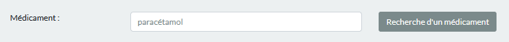
Le résultat de la requête affiche les différents produits (BN Label) en gris foncé et, le cas échéant, le détail des différents dosages/présentations en gris clair. Les effectifs sont également indiqués ainsi que le type de fréquence (Isolé, Peu fréquent, Fréquent, et Très fréquent).
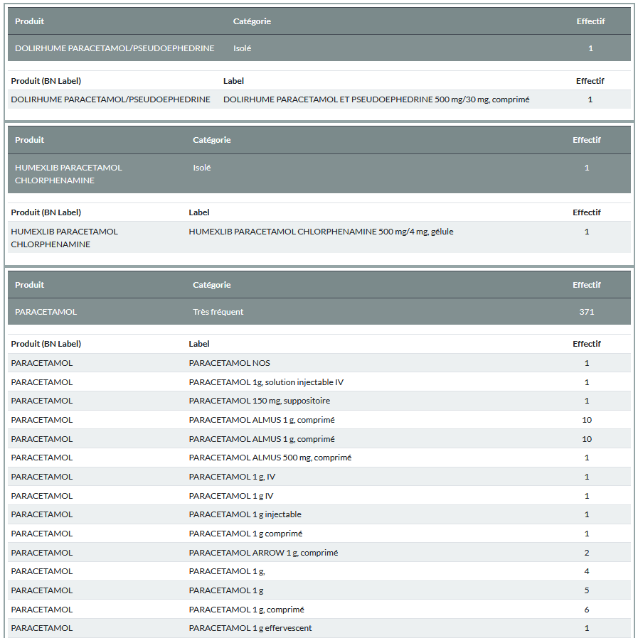
Après ce tableau, la dernière date de mise a jour de l’application est indiqué, ainsi que la grille permettant d’attribuer la catégorie de fréquence aux différents médicaments :
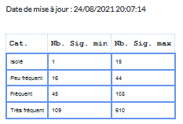
B - Mise à jour des données des occurrences « erreurs médicamenteuses »
1/ Contexte et flux des données
Les erreurs médicamenteuses sont saisies et stockées dans une base Access.
L’application Occurrence Erreurs Médicamenteuses, permet de rapatrier ces données dans sa propre base de données, de les regrouper selon le nom du médicament et d’afficher le nombre d’occurrence pour un médicament données.
La base de données doit donc être régulièrement mise à jour à partir de la base Access, les étapes, sont donc les suivantes :
Préparation des données
Traitement du reliquat par text mining (traitement par paquet de 30)
Traitement du reliquat manuel
Elles sont visibles et accessibles dans la partie supérieure (header) de l’application :
2/ Préparation des données
Cette étape permet de récupérer les données depuis la base Access des erreurs médicamenteuses, de les copier dans la base MySQL de l’application em_occurrence.
Un dénombrement du nombre d’occurrences est alors effectué grâce à la table de mapping (em_denom_map_v2) sur l’ensemble des produits provenant de la base Access.
Les nouveaux produits (d’origines Access) non encore « mappés » (absents de la table de mapping) sont copiés dans la table todo (em_denom_map_todo_v2). Les traitements suivants permettent de réaliser ce mapping, lors d’une première étape utilisant du « text minning » puis une deuxième étape manuelle sur le reliquat.
a) Cliquer sur « Préparation des données »
b) Valider
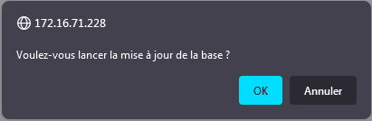
c) le traitement se lance et un message flash s’affiche lorsque celui-ci est terminé :
3/ Traitement du reliquat par text mining
Cette étape permet de rechercher les médicaments non-mappés dans les tables de référence de mapping (em_denom_map_v2) et ROMEDI (em_romedi_v2).
On recherche la distance de Levenshtein entre la dénomination du médicament à mapper et les 4 données suivantes :
- Label ROMEDI
- Label de la table de mapping
- BNLabel ROMEDI
- BNLabel de la table de mapping
Le Label représente le nom du produit avec son dosage et sa présentation (ex. ABILIFY 1 mg/ml, solution buvable ; ABILIFY 10 mg, comprimé ; ABILIFY 10 mg, comprimé orodispersible ; …), alors que le BNLabel reprend uniquement le nom du produit (ex. ABILIFY).
Une distance de Levenshtein de 0 traduit une similarité complète entre 2 chaînes de caractères, plus cette valeur augmente et plus les deux chaînes sont différentes.
Le traitement affiche ce qu’il a trouvé de plus proche, charge a l’utilisateur de valider ce mapping ou non.
a) Cliquer sur « Traitement du reliquat par text mining (traitement par paquet de 30) »
le text mining se lance sur les 30 premiers médicaments non-mappés.
Une fois le traitement terminé, les résultats sont affichés sous forme de tableau.
b) Tableau de choix du mapping à réaliser
les données de la table à mapper sont en bleu, en vert celles de la table de référence (table de mapping ou ROMEDI) et en blanc des données utilisées par l’application.
La dénomination, BNLabel et Label sont décrit plus haut. Les codes CIS et ATC affichés sont ceux présents dans la table de référence.
Les 3 id affichés (id_denom_map_todo, id_Romedi, id_denom_map) sont les identifiants uniques des lignes dans les 3 tables incriminées (em_denom_map_todo_v2, em_romedi_v2 et em_denom_map_v2). Ces données sont plutôt à réserver aux utilisateurs ayant quelques notions de base de données.
Levenshtein est la distance de Levenshtein décrit plus haut, entre le médicament a mapper et celui identifié dans la table de référence (0 = similarité complète).
Type text mining représente le type de « matching » réalisé. « denom » est la dénomination du médicament à mapper. Il est ensuite indiqué quelle table de référence et quelle colonne est utilisée.
Une case à cocher permet a l’utilisateur de sélectionner le mapping valide. L’application sélectionne automatiquement la ligne si il y a un matching complet entre la denomination et le Label ROMEDI.
Un premier niveau de tri est réalisé selon le type de « matching » vers la table de référence : Label ROMEDI, Label de la table de mapping, BNLabel ROMEDI et BNLabel de la table de mapping.
Un deuxième niveau de tri est réalisé selon la distance de Levenshtein.
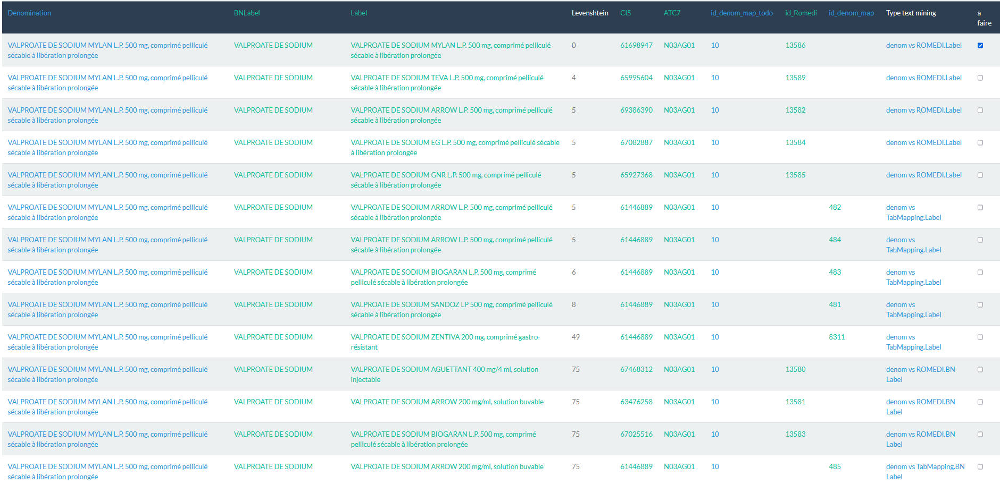
b) Validation et Tableau de choix du mapping à réaliser
Cliquer ensuite sur le bouton « Envoyer » :
L’application présente alors l’ensemble des donner à matcher, il est possible de les dé-sélectionner au niveau de la case à cocher « à faire » :
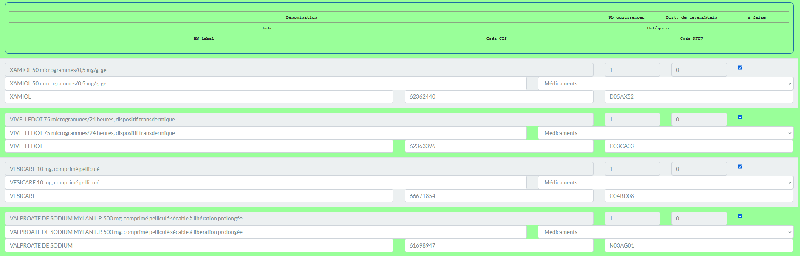
Après un deuxième envoi, l’application présente alors les 30 lignes suivantes à mapper comme dans l’étape b)
Si tous les médicaments à mapper l’ont été fait par cette méthode, il faut alors relancer le calcul du nombre d’occurrences en cliquant sur « Préparation des données ».
4/ Traitement du reliquat manuel
Le reliquat peut être traiter a la main selon la procédure suivante.
a) Cliquer sur « Traitement du reliquat manuel »
L’application va alors afficher l’ensemble des médicaments non-mappés :
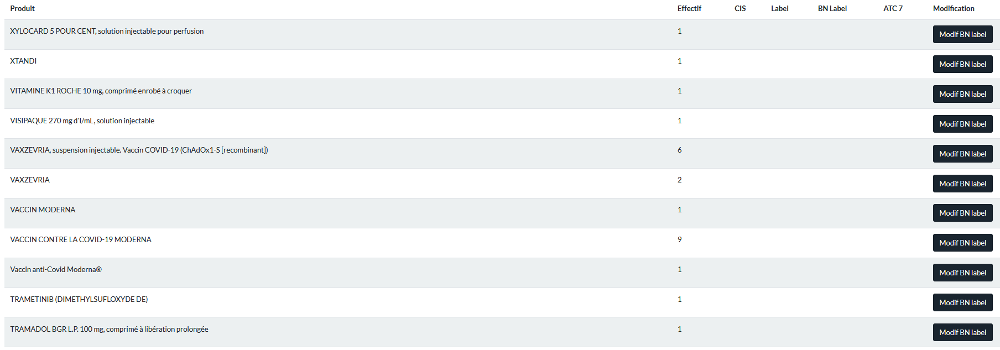
a) Attribution d’un BNLabel
Cette attribution s’effectue en cliquant sur le bouton « Modif BN Label » :
cela a pour effet d’ouvrir l’écran de modification du médicament à mapper.
La section en vert représente les informations attachées au médicament à mapper :
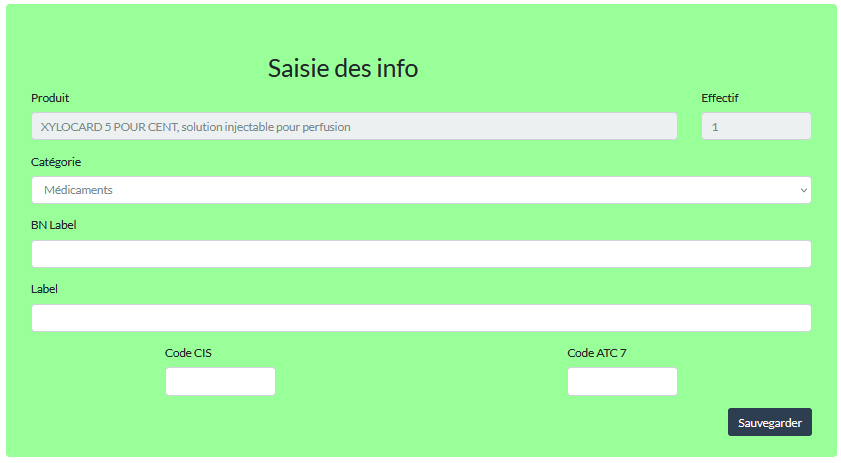
Celles en grise les interfaces de recherche dans la table de référence ROMEDI :
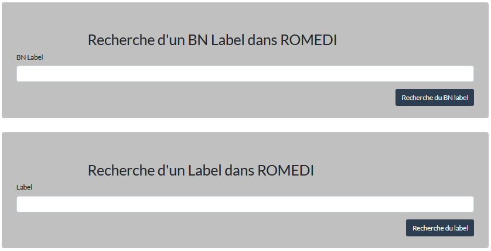
a) Attribution d’un BNLabel
Il est possible de chercher un BNLabel dans la table de référence ROMEDI, par exemple avec le nom du médicament :
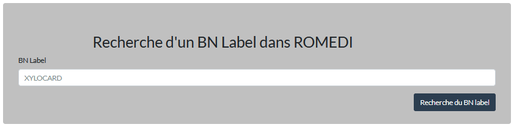
L’appli affiche alors le résultat de la recherche et l’utilisateur choisi celui qui semble le mieux correspondre grâce au bouton « Utilisation de ce BN label ».
Ces données seront modifiables dans l’écran suivant, il est donc possible de sélectionner une ligne pour avoir une trame de saisie et ensuite la modifier.
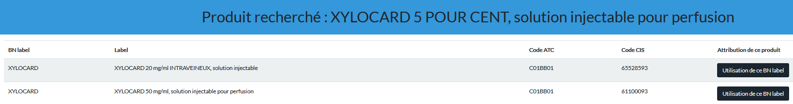
Il est donc possible de modifier les champs sur fond blanc (Catégorie, BNLabel, Label, Code CIS et code ATC).
Pour une valeur différente de « Médicament » dans le menu déroulant « catégorie », les champs Label, Code CIS et code ATC seront effacés.
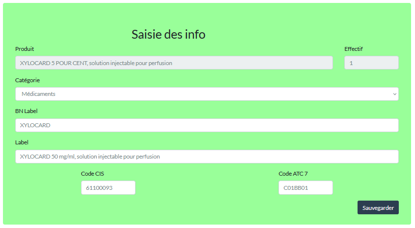
Si tous les médicaments ont bien été mappés, il faut alors relancer le calcul du nombre d’occurrences en cliquant sur « Préparation des données ».